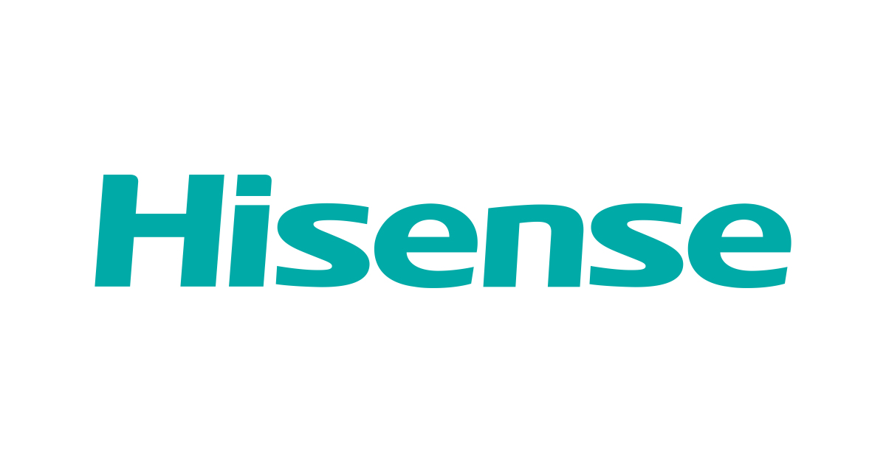

ネバネバ日記
本家に怒られそうな名前
Home
About
Contact
記録日:10/31
本家に怒られそうな名前
トリック・オア・トリート！
Happy Halloween!どうもねばねばくんです！皆さんハロウィンは楽しんでおりますか？
今回は本家に怒られそうな名前を作ってみました！最後まで見てください！
Hisense→Lowsense

Hisense＝高いセンスなので逆にLowsense＝低いセンスという名前を作ってみました！
まじでHisense様ごめんなさいごめんなさい・・・
じゃあBanana建てた次はLowsenseをHisenseの隣に立てよっかな...!?（やめろぉww）
グッドデザイン賞→バッドデザイン賞
バッドデザイン賞受賞しちゃった人は精神的に追い込まれるでしょうね、、、
バッドデザイン賞の大会も作ろっかな...!?（さっきからなんなんだよww）
マイクロソフト→ナノソフト
マイクロよりも一つ下の単位はナノだったのでナノソフトにしました！なんでマイクロだったんだろう...
マイクロソフトのサーバーをダウンさせて代わりのサービス「ナノソフト」をPCユーザーに提供しよう...（流石にやるなよ？やりかねないがね...）
ブラックベリー→ホワイトベリー
知らない人多いかな？まあキーボード付きのスマホ（？）的なやつを作った会社ですね。これは
Hynix2213
のネタなんですが、ブラックの反対のホワイトでホワイトベリーにしたらしいっすよ！
Hynix2213との共同会社「ホワイトベリー」をいつか建てよっかな...（もうつっこむのめんどいわ...）
ツッコミ役が疲れたんで今日はこのぐらいにしときましょう
終わり
いやー！本気で全部実現しちゃおっかな？？？（ご自由にどうぞ...）
がんばるぞー！それじゃあ...
じゃあね...